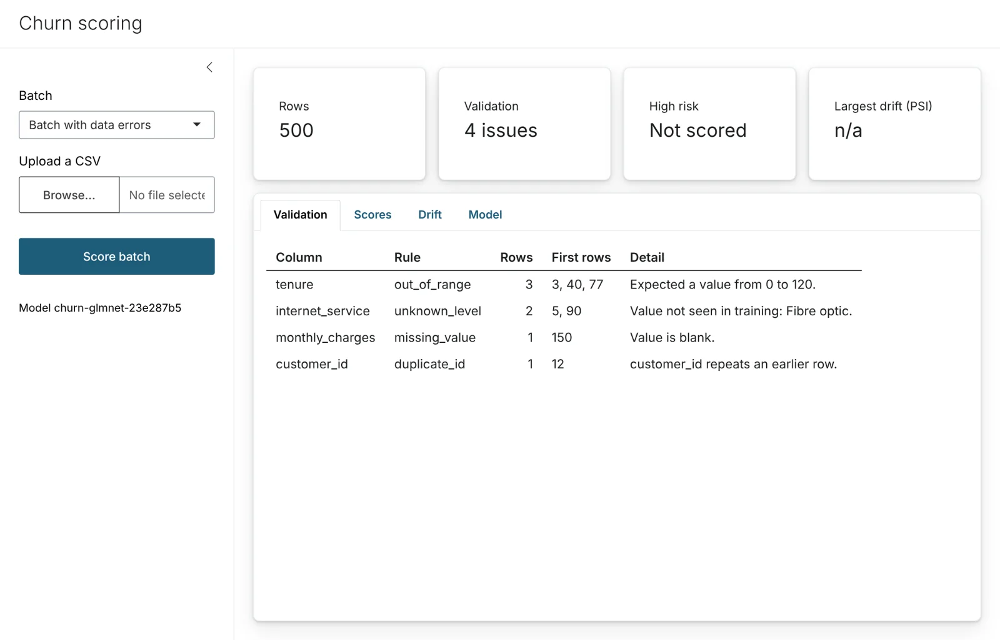
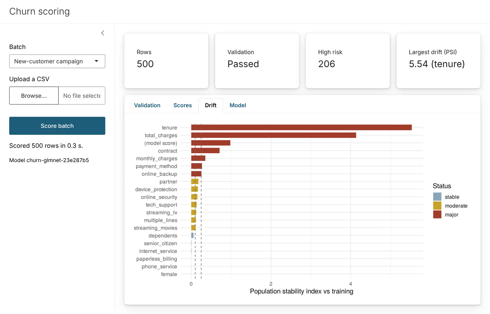
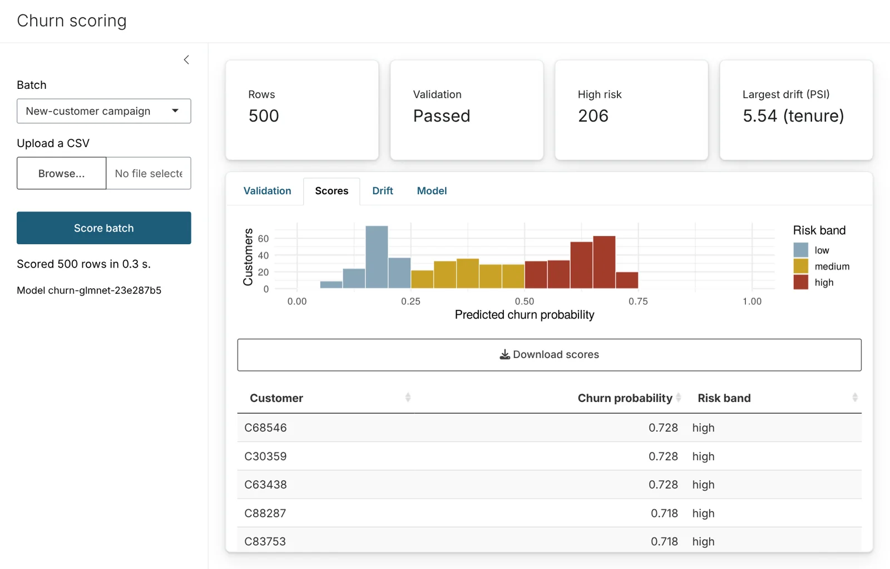
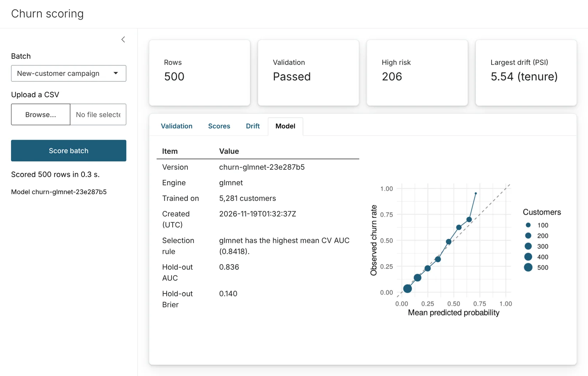

One user scores a million rows. Does everyone else wait?
R runs one task at a time in each process. In this Shiny app, with scoring done in the app's own process, a second user who clicked half a second into a 1,000,000-row job waited 7.1 s for a reply. With scoring moved to background R workers, a click two seconds in waited 57 ms. That's about as fast as an idle app (55 ms).
What's in the build
An R package, churnscore, built around a public telco churn dataset (7,043 customers). Each part is the kind of thing that breaks when a notebook model goes to production:
- Validation before scoring. A column schema checks types, ranges, allowed values, blanks and duplicate IDs. It reports every problem in a batch at once, with the rows to fix.
- A model chosen by a rule written in advance. I compared elastic-net logistic regression (glmnet) with a random forest (ranger) using 5-fold cross-validation, with the preprocessing recipe refit inside each fold. The rule: take the highest mean AUC, and if the other model is within 0.005, take the faster one. glmnet won on AUC (0.842 vs 0.840). The forest was better calibrated (0.028 vs 0.036 expected calibration error), and I report that too.
- A versioned model bundle. It records the training data's SHA-256, the package versions and the hold-out metrics.
load_bundle()refuses a model file whose checksum has changed and warns when an installed package version differs. - Chunked batch scoring, and drift checks (population stability index) on every input column and on the scores.
- A plumber API and a Shiny app (bslib) that share the same functions, with scoring in background workers.
- 28 tests, 133 expectations, including
shiny::testServer()and an API test that compares every returned probability withscore_batch().R CMD check: OK.
The Shiny app
Screenshots of the app running, taken by a script in the build.




Score a customer in your browser
This is the production model, exported from R as 31 numbers (22 of the coefficients are non-zero after regularisation). On all 1,762 hold-out customers it gives the same probability as R to within 1.2×10−15.
Predicted churn probability
What moved it
Each term is the coefficient times how far this customer sits from the training average, so it shows the push up or down from an average customer.
What the tests and measurements caught
Every item below was a real bug in this build, found by a test or a measurement and fixed before the numbers on this page were taken.
The model only worked in the session that trained it
glmnet's
predict()method is registered only once the package is loaded. Training had loaded it. A fresh process that only reads the saved bundle, like the API or the app, failed with "no applicable method". The scoring function now loads the model's package itself.The API rounded every probability to 4 decimals
plumber's JSON serializer defaults to four digits, so 0.4161102 came back as 0.4161. The API test compares each returned probability with
score_batch()to 10−12, and that caught it. Fixed withdigits = NA.Malformed JSON got a 500 instead of a 400
plumber parsed the body before the handler ran, and turned a parse failure into a generic server error. A pass-through parser now hands the raw body to the handler, which answers 400 with the expected format.
A brand-new customer sent on their own was rejected
JSON encoders drop null fields. A customer in their first month has no total charges yet, so the field vanished and validation reported a missing column. Columns that may be blank are now restored when every record omits them.
A file with a churn label column warned on every chunk
In a backtest file the label reached the preprocessing recipe as text. Only the schema's columns are passed on now.
The first score after start-up took 1.9 s for 500 rows
The background workers were still loading packages. Spotted in a screenshot. The workers are now warmed when the app starts, and the same score takes 0.3 s.
Measured
Run on a 2-core sandbox with R 4.3.3. tools/run_all.sh reruns everything below and rebuilds this page from the result files.
| Code | |
|---|---|
| Tests | 28 tests, 133 expectations, 0 failing |
R CMD check | OK |
| Model | |
| 5-fold CV AUC | glmnet 0.842, ranger 0.840 |
| Hold-out AUC (1,762 customers) | glmnet 0.836 (in production), ranger 0.838 |
| Hold-out Brier score | glmnet 0.140, ranger 0.138 |
| Hold-out calibration error | glmnet 0.031, ranger 0.011 |
| First-year customers (535) | AUC 0.769 vs 0.836 overall; churn rate 46%, mean prediction 42% |
| Monitoring (200 batches of 300 hold-out customers each) | |
| Drift alarms on random batches | 0 major, 2 moderate |
| First-year customers flagged major | 100% |
| Prices up 15% flagged major | 100% |
| Fibre customers weighted 3× | 53% major, 100% at least moderate |
| Validation, clean batches | 200/200 passed |
| Validation, one planted fault each | 200/200 reported the exact rule and nothing else |
| Speed | |
| Scoring 10,000 / 100,000 / 1,000,000 rows | 0.09 s / 0.62 s / 7.3 s |
| The forest, same batches | 1.2 s / 11.6 s (19× slower) |
| Peak extra memory, 1,000,000 rows | 340 MB in 50,000-row chunks (7.0 s); 909 MB in one pass (10.8 s) |
| API, one customer (300 requests) | 28 ms median, 69 ms 95th percentile |
| API, 1,000 customers (20 requests) | 52 ms median |
| Another user's wait, clicking 0.5 s into a 1,000,000-row score | 7.1 s in-process; 1.1 s with workers |
| The same, clicking 2 s or 4 s in | 5.1 s or 3.1 s in-process; 57 ms or 66 ms with workers |
| Browser scorer vs R | 1,762 customers, largest difference 1.2×10−15 |
Not measured
- The data is a public telco churn dataset, not yours. The drifted batches are hold-out customers filtered or adjusted to imitate a campaign, a price rise and a fibre push.
- The 10,000 to 1,000,000-row batches resample the hold-out customers, so they test speed and memory, not accuracy.
- The concurrency test uses two users on one process. I did not load-test many users, or run several app processes behind a load balancer.
- API latency was measured on the same machine, with no network in the path.
- R packages came from Ubuntu's archive (the sandbox could not reach CRAN), so versions are a little older than current CRAN. The bundle records them, and
load_bundle()warns when they differ. - The Dockerfile in the kit was not built here; the sandbox has no access to a container registry.
- The validation faults come from a generator I wrote, so the result shows each rule works, not that every kind of bad data is caught.